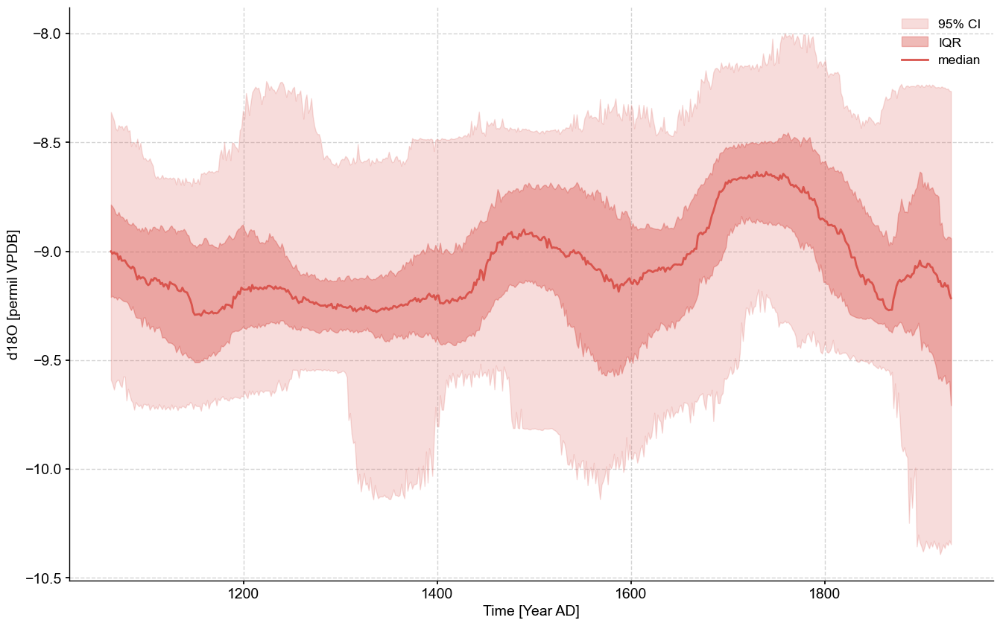
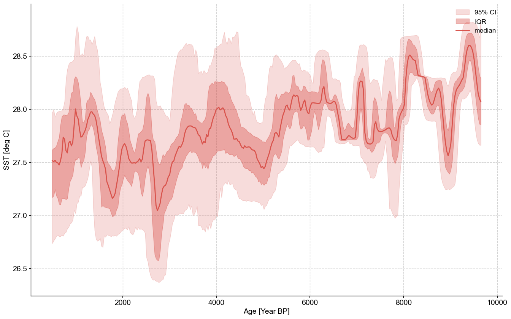

Working with Age Ensembles#
Preamble#
Quantifying chronological uncertainties, and how they influence the understanding of past changes in Earth systems, is a unique and fundamental challenge of the paleogeosciences. Without robust error determination, it is impossible to properly assess the extent to which past changes occurred simultaneously across regions, accurately estimate rates of change or the duration of abrupt events, or attribute causality – all of which limit our capacity to apply paleogeoscientific understanding to modern and future processes. With regards to the construction of an age-depth model, studies typically calculate a single “best” estimate (often the posterior median or mean), use this model to place measured paleoclimatic or paleoenvironmental data on a timescale, and then proceed to analyze the record with little to no reference to the uncertainties generated as part of the age-modeling exercise, however rigorous in its own right.
Luckily, the vast majority of modern age-uncertainty quantification techniques estimate uncertainties by generating an “ensemble” of plausible age models: hundreds or thousands of plausible alternate age–depth relationships that are consistent with radiometric age estimates, the depositional or accumulation processes of the archive, and the associated uncertainties. By taking advantage of these ensembles to evaluate how the results of an analysis vary across the ensemble members, age-based uncertainty can be more robustly accounted for. A rising number of paleoclimate records now incorporate such age ensembles, which the LiPD format was designed to store. However, properly leveraging these often unwieldy ensemble objects for analysis can be cumbersome. In this notebook we:
Show how translate ensemble age-depth relationships to ensemble age-paleovariable relationships
Show how to apply this transformatuon in two different data contexts.
The goal is to provide boilerplate code for specific solutions as well as a launching point for researchers to craft custom solutions as necessary. Further reading on age models (as well as an R implemenation for their generation) can be found in Mckay et al. (2021) (the paper from which much of this preamble was lifted).
Goals#
Create an
ensemble_seriesobject from two different starting points:A LiPD file
A NOAA file plus a CSV
Reading time:
Keywords#
LiPD; Age ensembles
Pre-requisites#
This tutorial assumes basic knowledge of Python. If you are not familiar with this coding language, check out this tutorial.
Relevant Packages#
PyLiPD; Pandas
Data Description#
This tutorial makes use of the following datasets:
Crystal cave: McCabe-Glynn, S., Johnson, K., Strong, C. et al. Variable North Pacific influence on drought in southwestern North America since AD 854. Nature Geosci 6, 617–621 (2013). https://doi.org/10.1038/ngeo1862
MD98-2181: Khider, D., Jackson, C. S., and Stott, L. D., Assessing millennial-scale variability during the Holocene: A perspective from the western tropical Pacific, Paleoceanography, 29, 143– 159 (2014). https://doi:10.1002/2013PA002534.
Demonstration#
Let’s import the necessary packages:
import json
import pyleoclim as pyleo
import numpy as np
import pandas as pd
from pylipd.lipd import LiPD
Ensemble Series creation function#
Here we define the function we’ll use to create ensembles. We’ll require that the user pass in a vector for paleo data values, a vector for depth related to the paleo data, an ensemble table, and a vector for depth related to the ensemble table. The first dimension of the paleo data values and the first dimension of the paleo depth vector should be the same. The same goes for the age ensemble depth vector and the age ensemble matrix. Feel free to copy and use this function at will!
def mapAgeEnsembleToPaleoData(ensembleValues, paleoValues, ensembleDepth, paleoDepth,
value_name = None,value_unit = None,time_name = None,time_unit = None):
""" Map the depth for the ensemble age values to the paleo values
Parameters
----------
ensembleValues : array
A matrix of possible age models. Realizations
should be stored in columns
paleoValues : 1D array
A vector containing the paleo data values. The vector
should have the same length as depthPaleo
ensembleDepth : 1D array
A vector of depth. The vector should have the same
length as the number of rows in the ensembleValues
paleoDepth : 1D array
A vector corresponding to the depth at which there
are paleodata information
value_name : str
Paleo data value name
value_unit : str
Paleo data value unit
time_name : str
Time name
time_unit : str
Time unit
Returns
-------
ensemble : pyleoclim.EnsembleSeries
A matrix of age ensemble on the PaleoData scale
"""
#Make sure that numpy arrays were given and try to coerce them into vectors if possible
ensembleDepth=np.squeeze(np.array(ensembleDepth))
paleoValues = np.squeeze(np.array(paleoValues))
paleoDepth = np.squeeze(np.array(paleoDepth))
#Check that arrays are vectors for np.interp
if paleoValues.ndim > 1:
raise ValueError('ensembleValues has more than one dimension, please pass it as a 1D array')
if ensembleDepth.ndim > 1:
raise ValueError('ensembleDepth has more than one dimension, please pass it as a 1D array')
if paleoDepth.ndim > 1:
raise ValueError('paleoDepth has more than one dimension, please pass it as a 1D array')
if len(ensembleDepth)!=np.shape(ensembleValues)[0]:
raise ValueError("Ensemble depth and age need to have the same length")
if len(paleoValues) != len(paleoDepth):
raise ValueError("Paleo depth and age need to have the same length")
#Interpolate
ensembleValuesToPaleo = np.zeros((len(paleoDepth),np.shape(ensembleValues)[1])) #placeholder
for i in np.arange(0,np.shape(ensembleValues)[1]):
ensembleValuesToPaleo[:,i]=np.interp(paleoDepth,ensembleDepth,ensembleValues[:,i])
series_list = []
for s in ensembleValuesToPaleo.T:
series_tmp = pyleo.Series(time=s, value=paleoValues,
verbose=False,
clean_ts=False,
value_name=value_name,
value_unit=value_unit,
time_name=time_name,
time_unit=time_unit)
series_list.append(series_tmp)
ensemble = pyleo.EnsembleSeries(series_list=series_list)
return ensemble
Example from LiPD#
For this example we’ll use the Crystal Cave record.
The easiest way to load data from a LiPD file in Python is to use the PyLiPD package. Tutorials on basic usage of the PyLiPD package can be found in the PyLiPD Tutorials GitHub repository.
#Create a path to the data
filename = '../data/Crystal.McCabe-Glynn.2013.lpd'
#Initialize the lipd object
D = LiPD()
#Load the data
D.load(filename)
Loading 1 LiPD files
100%|██████████| 1/1 [00:00<00:00, 4.43it/s]
Loaded..
You can create a DataFrame containing relevant information about the ensembles: (1) ensembleTable : the full name of the table (relevant if one exists) (2) EnsembleVariableValues: Each column represents a member of the ensemble. (3) information about depth
Note that the DataFrame includes information about units, which may be needed to convert the age-depth found in the ensemble table vs the other found with the data.
#Pull the ensemble tables into a dataframe
ensemble_df = D.get_ensemble_tables()
ensemble_df
| datasetName | ensembleTable | ensembleVariableName | ensembleVariableValues | ensembleVariableUnits | ensembleDepthName | ensembleDepthValues | ensembleDepthUnits | notes | |
|---|---|---|---|---|---|---|---|---|---|
| 0 | Crystal.McCabe-Glynn.2013 | http://linked.earth/lipd/Crystal.McCabe-Glynn.... | Year | [[2007.0, 2007.0, 2008.0, 2007.0, 2007.0, 2007... | AD | depth | [0.1, 0.15, 0.2, 0.25, 0.3, 0.35, 0.4, 0.45, 0... | mm | None |
You can flatten the information contained in a LiPD file into a DataFrame that can be used for further querying. The columns correspond to metadata properties while each row corresponds to a specific variable (a column in the csv file).
#Pull the paleo data into a list. We use all the available data set names because our file only contains one dataset
timeseries,df = D.get_timeseries(D.get_all_dataset_names(),to_dataframe=True)
df
Extracting timeseries from dataset: Crystal.McCabe-Glynn.2013 ...
| mode | time_id | investigator | geo_meanLon | geo_meanLat | geo_meanElev | geo_type | pub1_author | pub1_volume | pub1_pages | ... | paleoData_TSid | paleoData_variableName | paleoData_number | paleoData_variableType | paleoData_values | paleoData_hasResolution_hasMedianValue | paleoData_hasResolution_hasMeanValue | paleoData_hasResolution_hasMinValue | paleoData_hasResolution_hasMaxValue | paleoData_proxyObservationType | |
|---|---|---|---|---|---|---|---|---|---|---|---|---|---|---|---|---|---|---|---|---|---|
| 0 | paleoData | age | [{'name': 'R.L. Edwards'}, {'name': 'M. Berkel... | -118.82 | 36.59 | 1386.0 | Feature | Kathleen R. Johnson Staryl McCabe-Glynn;Max Be... | 6.0 | 617-621 | ... | PYT0EBE8TVT | age | 2 | inferred | [2007.7, 2007.0, 2006.3, 2005.6, 2004.9, 2004.... | NaN | NaN | NaN | NaN | NaN |
| 1 | paleoData | age | [{'name': 'R.L. Edwards'}, {'name': 'M. Berkel... | -118.82 | 36.59 | 1386.0 | Feature | Kathleen R. Johnson Staryl McCabe-Glynn;Max Be... | 6.0 | 617-621 | ... | PYTVDX1FMFG | depth | 1 | measured | [0.05, 0.1, 0.15, 0.2, 0.25, 0.3, 0.35, 0.4, 0... | -1.1 | -1.097626 | 2.5 | -0.7 | Depth |
| 2 | paleoData | age | [{'name': 'R.L. Edwards'}, {'name': 'M. Berkel... | -118.82 | 36.59 | 1386.0 | Feature | Kathleen R. Johnson Staryl McCabe-Glynn;Max Be... | 6.0 | 617-621 | ... | PYT2H04CZ1R | d18o | 3 | measured | [-8.01, -8.23, -8.61, -8.54, -8.6, -9.08, -8.9... | -1.1 | -1.097626 | 2.5 | -0.7 | D18O |
3 rows × 53 columns
To see which properties are available, you can return the name of the columns in the dataframe:
df.columns
Index(['mode', 'time_id', 'investigator', 'geo_meanLon', 'geo_meanLat',
'geo_meanElev', 'geo_type', 'pub1_author', 'pub1_volume', 'pub1_pages',
'pub1_journal', 'pub1_doi', 'pub1_abstract', 'pub1_pubDataUrl',
'pub1_title', 'pub1_year', 'pub1_DOI', 'lipdVersion', 'funding1_agency',
'funding1_grant', 'funding2_grant', 'funding2_agency', 'funding3_grant',
'funding3_agency', 'hasUrl', 'dataSetName', 'createdBy', 'archiveType',
'tableType', 'paleoData_tableName', 'paleoData_filename',
'paleoData_missingValue', 'age', 'ageUnits', 'depth', 'depthUnits',
'paleoData_takenAtDepth', 'paleoData_hasMeanValue',
'paleoData_inferredVariableType', 'paleoData_units',
'paleoData_hasMedianValue', 'paleoData_hasMaxValue',
'paleoData_hasMinValue', 'paleoData_TSid', 'paleoData_variableName',
'paleoData_number', 'paleoData_variableType', 'paleoData_values',
'paleoData_hasResolution_hasMedianValue',
'paleoData_hasResolution_hasMeanValue',
'paleoData_hasResolution_hasMinValue',
'paleoData_hasResolution_hasMaxValue',
'paleoData_proxyObservationType'],
dtype='object')
Let’s have a look at the names of the variable stored in the DataFrame:
#Identify the variable of interest. In this case its d18o
df['paleoData_variableName']
0 age
1 depth
2 d18o
Name: paleoData_variableName, dtype: object
We are interested in d18O, which is stored in the first row (remember that Python uses zero-indexing).
df_row = df.loc[df['paleoData_variableName']=='d18o']
paleoDepth = np.array(*df_row['depth'])
paleoValues = np.array(*df_row['paleoData_values'])
#It's wise to make sure our units all make sense so we'll pull these as well
paleo_depth_units = df_row['depthUnits']
#The stored value name and value unit are horrendously formatted, so we'll hard code them using info from the dataframe
value_name = 'd18O'
value_unit = 'permil VPDB'
#We can access the row of interest in our ensemble table via indexing by 0 (because there's just the one row anyway)
ensembleDepth = ensemble_df.iloc[0]['ensembleDepthValues']
ensembleValues = ensemble_df.iloc[0]['ensembleVariableValues']
#Getting depth units, time name, and time units from our ensemble table
ensemble_depth_units = ensemble_df.iloc[0]['ensembleDepthUnits']
#The way time name and units are stored in our ensemble dataframe are a bit wonky, so we'll do some organization of our own
time_name = 'Time'
time_unit = f'{ensemble_df.iloc[0]["ensembleVariableName"]} {ensemble_df.iloc[0]["ensembleVariableUnits"]}'
If you look at our ensembleValues as they exist currently, you’ll notice that it is a string. That is because it was taken from a JSON file and stored as a string:
type(ensembleValues)
str
This is actually a JSON format, and in this case the easiest way to get our array into something more workable is via json.loads(). We can apply this as a lambda function to our original ensemble_df.
ensemble_df['ensembleVariableValues_reformatted'] = ensemble_df['ensembleVariableValues'].apply(lambda row : np.array(json.loads(row)).T)
ensembleValues = ensemble_df.iloc[0]['ensembleVariableValues_reformatted'].T #Take the transpose to have realizations in columns
ensembleValues
array([[2007., 2007., 2008., ..., 2007., 2007., 2007.],
[2006., 2006., 2008., ..., 2006., 2006., 2006.],
[2005., 2006., 2007., ..., 2006., 2006., 2004.],
...,
[ 985., 957., 896., ..., 1000., 1005., 655.],
[ 985., 957., 895., ..., 1000., 1004., 655.],
[ 985., 957., 894., ..., 1000., 1004., 654.]])
We do the same for ensembleDepth
ensemble_df['ensembleDepthValues_reformatted'] = ensemble_df['ensembleDepthValues'].apply(lambda row : np.array(json.loads(row)).T)
ensembleDepth = ensemble_df.iloc[0]['ensembleDepthValues_reformatted']
ensembleDepth
array([1.000e-01, 1.500e-01, 2.000e-01, ..., 1.042e+02, 1.043e+02,
1.044e+02])
Much better! We can check that the shapes are appropriate as well.
print(f'Num rows in ensembleValues: {ensembleValues.shape[0]}, Length of ensembleDepth: {len(ensembleDepth)}')
Num rows in ensembleValues: 1053, Length of ensembleDepth: 1053
All looks well. Now we can pass everything into mapAgeEnsembletoPaleoData
ensemble = mapAgeEnsembleToPaleoData(
ensembleValues=ensembleValues,
paleoValues=paleoValues,
ensembleDepth=ensembleDepth,
paleoDepth=paleoDepth,
value_name=value_name,
value_unit=value_unit,
time_name=time_name,
time_unit=time_unit
)
And voila! We can leverage all of pyleoclim’s wonderful ensemble functionalities.
ensemble.common_time().plot_envelope(figsize=(16,10))
(<Figure size 1600x1000 with 1 Axes>,
<Axes: xlabel='Time [Year AD]', ylabel='d18O [permil VPDB]'>)

Example from NOAA#
For this example we’ll use the MD982181 record from Khider et al. (2014). We will source the CSV file containing the age ensemble for the SST values from this record from the Linked Earth wiki page, though a local CSV file could also be used here with minimal changes.
#Loading the ensemble tables. Note that column 0 corresponds to depth
ensemble_url = 'https://wiki.linked.earth/wiki/images/7/79/MD982181.Khider.2014.chron1model1ensemble.csv'
ensemble_df = pd.read_csv(ensemble_url,header=None)
ensemble_df
| 0 | 1 | 2 | 3 | 4 | 5 | 6 | 7 | 8 | 9 | ... | 991 | 992 | 993 | 994 | 995 | 996 | 997 | 998 | 999 | 1000 | |
|---|---|---|---|---|---|---|---|---|---|---|---|---|---|---|---|---|---|---|---|---|---|
| 0 | 1.0 | 207.301109 | -21.273103 | 359.894201 | 3.950743 | 69.791337 | 195.918556 | 477.506539 | 254.071725 | 18.043039 | ... | 200.832011 | 29.981959 | 159.156188 | -30.030879 | 10.998169 | 256.535747 | 232.055674 | 61.422668 | -24.770834 | 475.549540 |
| 1 | 2.5 | 210.598385 | -6.095219 | 363.537231 | 19.011842 | 79.372074 | 202.387822 | 478.016110 | 257.074060 | 29.545646 | ... | 207.932983 | 38.840758 | 167.586782 | -18.344618 | 17.123170 | 262.956721 | 235.486451 | 71.243925 | -18.329537 | 475.748343 |
| 2 | 5.0 | 216.040623 | 19.369267 | 369.630612 | 44.252513 | 95.396047 | 213.157541 | 478.839723 | 262.061321 | 48.814435 | ... | 219.792022 | 53.661308 | 181.704918 | 1.189714 | 27.295888 | 273.711759 | 241.180553 | 87.665771 | -7.626766 | 476.046104 |
| 3 | 6.5 | 219.280420 | 34.728605 | 373.297041 | 59.463559 | 105.037349 | 219.613424 | 479.321568 | 265.045696 | 60.422642 | ... | 226.919006 | 62.580463 | 190.208029 | 12.937785 | 33.382424 | 280.190421 | 244.585561 | 97.544358 | -1.220809 | 476.208644 |
| 4 | 7.0 | 220.356966 | 39.859076 | 374.520562 | 64.542743 | 108.254684 | 221.764597 | 479.480550 | 266.039429 | 64.298267 | ... | 229.296199 | 65.557071 | 193.046673 | 16.857451 | 35.409002 | 282.353374 | 245.719046 | 100.840599 | 0.912427 | 476.260687 |
| ... | ... | ... | ... | ... | ... | ... | ... | ... | ... | ... | ... | ... | ... | ... | ... | ... | ... | ... | ... | ... | ... |
| 332 | 827.0 | 9434.248215 | 9545.771005 | 9596.976203 | 9588.136195 | 9438.630060 | 9611.671864 | 9514.355046 | 9613.503470 | 9515.947093 | ... | 9441.197068 | 9509.291601 | 9584.105141 | 9487.163021 | 9432.573204 | 9528.250540 | 9577.714737 | 9442.864368 | 9570.410846 | 9500.091340 |
| 333 | 836.0 | 9662.543323 | 9749.147272 | 9818.449843 | 9818.782493 | 9638.010047 | 9835.377593 | 9714.793979 | 9837.351019 | 9721.120860 | ... | 9644.065902 | 9728.433304 | 9795.061924 | 9676.390919 | 9623.447075 | 9734.211473 | 9803.351304 | 9649.143650 | 9780.641448 | 9718.151948 |
| 334 | 839.0 | 9739.420208 | 9817.390937 | 9892.732202 | 9896.475674 | 9705.027332 | 9910.431322 | 9781.949176 | 9912.636525 | 9790.081021 | ... | 9712.162198 | 9802.252278 | 9865.803631 | 9739.802457 | 9687.383488 | 9803.283922 | 9879.292011 | 9718.456343 | 9851.235118 | 9791.439448 |
| 335 | 843.0 | 9842.408624 | 9908.664339 | 9992.061086 | 10000.572811 | 9794.731539 | 10010.805766 | 9871.703033 | 10013.435160 | 9882.382981 | ... | 9803.252697 | 9901.159253 | 9960.389782 | 9824.560618 | 9772.826640 | 9895.641914 | 9981.000988 | 9811.218375 | 9945.682572 | 9889.530993 |
| 336 | 846.0 | 9919.958299 | 9977.298254 | 10066.739084 | 10078.966925 | 9862.230432 | 10086.278763 | 9939.153975 | 10089.299381 | 9951.834789 | ... | 9871.758062 | 9975.645163 | 10031.496854 | 9888.262156 | 9837.032501 | 9965.076292 | 10057.571280 | 9881.008911 | 10016.722863 | 9963.337556 |
337 rows × 1001 columns
The format here is different from the one we encountered from the LiPD file, so our json.loads() trick won’t work. Outside of LiPD (and sometimes within it), the format of age ensemble tables can vary considerably. We’ll show how to approach formatting this table in a minute. First, let’s look at the paleo data we’re working with.
url = 'https://www.ncei.noaa.gov/pub/data/paleo/contributions_by_author/khider2014/khider2014-sst.txt'
df = pd.read_csv(url, sep = '\t', skiprows=137)
df
| depth_cm | Mg/Ca-g.rub-w | d18Og.rub-w | age_calyrBP | age-2.5% | age-34% | age-68% | age-97.5% | SST | SST-2.5% | SST-34% | SST-68% | SST-97.5% | δ18Osw | δ18Osw 2.5% | δ18Osw 34% | δ18Osw 68% | δ18Osw 97.5% | |
|---|---|---|---|---|---|---|---|---|---|---|---|---|---|---|---|---|---|---|
| 0 | 1.0 | 5.21 | -999.990 | 199 | -63 | 96 | 237 | 428 | 27.80 | 26.88 | 27.63 | 28.04 | 28.74 | -999.99 | -999.99 | -999.99 | -999.99 | -999.99 |
| 1 | 2.5 | 5.04 | -2.830 | 205 | -53 | 104 | 242 | 429 | 27.41 | 26.47 | 27.23 | 27.65 | 28.35 | 0.02 | -0.32 | -0.05 | 0.10 | 0.35 |
| 2 | 3.0 | -999.99 | -2.810 | 207 | -50 | 107 | 244 | 430 | -999.99 | -999.99 | -999.99 | -999.99 | -999.99 | -999.99 | -999.99 | -999.99 | -999.99 | -999.99 |
| 3 | 4.0 | -999.99 | -2.780 | 211 | -44 | 112 | 248 | 432 | -999.99 | -999.99 | -999.99 | -999.99 | -999.99 | -999.99 | -999.99 | -999.99 | -999.99 | -999.99 |
| 4 | 5.0 | 5.10 | -2.788 | 216 | -38 | 117 | 252 | 433 | 27.55 | 26.58 | 27.36 | 27.79 | 28.49 | 0.09 | -0.25 | 0.01 | 0.17 | 0.43 |
| ... | ... | ... | ... | ... | ... | ... | ... | ... | ... | ... | ... | ... | ... | ... | ... | ... | ... | ... |
| 450 | 831.0 | -999.99 | -2.580 | 9604 | 9450 | 9563 | 9649 | 9764 | -999.99 | -999.99 | -999.99 | -999.99 | -999.99 | -999.99 | -999.99 | -999.99 | -999.99 | -999.99 |
| 451 | 836.0 | 5.14 | -2.650 | 9722 | 9565 | 9677 | 9770 | 9886 | 27.64 | 26.67 | 27.46 | 27.87 | 28.59 | 0.01 | -0.33 | -0.06 | 0.09 | 0.34 |
| 452 | 839.0 | 5.77 | -2.620 | 9793 | 9634 | 9747 | 9844 | 9960 | 28.95 | 28.08 | 28.77 | 29.17 | 29.88 | 0.30 | -0.04 | 0.23 | 0.38 | 0.63 |
| 453 | 843.0 | 5.45 | -2.640 | 9888 | 9726 | 9839 | 9942 | 10059 | 28.30 | 27.42 | 28.14 | 28.53 | 29.19 | 0.13 | -0.20 | 0.07 | 0.22 | 0.47 |
| 454 | 846.0 | 5.42 | -2.530 | 9960 | 9794 | 9909 | 10015 | 10134 | 28.24 | 27.33 | 28.06 | 28.47 | 29.16 | 0.22 | -0.10 | 0.15 | 0.31 | 0.56 |
455 rows × 18 columns
The missing value field was -999, let’s change it to NaN.
df.replace(-999.99, np.NaN, inplace=True)
df
| depth_cm | Mg/Ca-g.rub-w | d18Og.rub-w | age_calyrBP | age-2.5% | age-34% | age-68% | age-97.5% | SST | SST-2.5% | SST-34% | SST-68% | SST-97.5% | δ18Osw | δ18Osw 2.5% | δ18Osw 34% | δ18Osw 68% | δ18Osw 97.5% | |
|---|---|---|---|---|---|---|---|---|---|---|---|---|---|---|---|---|---|---|
| 0 | 1.0 | 5.21 | NaN | 199 | -63 | 96 | 237 | 428 | 27.80 | 26.88 | 27.63 | 28.04 | 28.74 | NaN | NaN | NaN | NaN | NaN |
| 1 | 2.5 | 5.04 | -2.830 | 205 | -53 | 104 | 242 | 429 | 27.41 | 26.47 | 27.23 | 27.65 | 28.35 | 0.02 | -0.32 | -0.05 | 0.10 | 0.35 |
| 2 | 3.0 | NaN | -2.810 | 207 | -50 | 107 | 244 | 430 | NaN | NaN | NaN | NaN | NaN | NaN | NaN | NaN | NaN | NaN |
| 3 | 4.0 | NaN | -2.780 | 211 | -44 | 112 | 248 | 432 | NaN | NaN | NaN | NaN | NaN | NaN | NaN | NaN | NaN | NaN |
| 4 | 5.0 | 5.10 | -2.788 | 216 | -38 | 117 | 252 | 433 | 27.55 | 26.58 | 27.36 | 27.79 | 28.49 | 0.09 | -0.25 | 0.01 | 0.17 | 0.43 |
| ... | ... | ... | ... | ... | ... | ... | ... | ... | ... | ... | ... | ... | ... | ... | ... | ... | ... | ... |
| 450 | 831.0 | NaN | -2.580 | 9604 | 9450 | 9563 | 9649 | 9764 | NaN | NaN | NaN | NaN | NaN | NaN | NaN | NaN | NaN | NaN |
| 451 | 836.0 | 5.14 | -2.650 | 9722 | 9565 | 9677 | 9770 | 9886 | 27.64 | 26.67 | 27.46 | 27.87 | 28.59 | 0.01 | -0.33 | -0.06 | 0.09 | 0.34 |
| 452 | 839.0 | 5.77 | -2.620 | 9793 | 9634 | 9747 | 9844 | 9960 | 28.95 | 28.08 | 28.77 | 29.17 | 29.88 | 0.30 | -0.04 | 0.23 | 0.38 | 0.63 |
| 453 | 843.0 | 5.45 | -2.640 | 9888 | 9726 | 9839 | 9942 | 10059 | 28.30 | 27.42 | 28.14 | 28.53 | 29.19 | 0.13 | -0.20 | 0.07 | 0.22 | 0.47 |
| 454 | 846.0 | 5.42 | -2.530 | 9960 | 9794 | 9909 | 10015 | 10134 | 28.24 | 27.33 | 28.06 | 28.47 | 29.16 | 0.22 | -0.10 | 0.15 | 0.31 | 0.56 |
455 rows × 18 columns
As in the crystal cave example, loading the data is fairly simple. Most of the legwork is getting our data into the appropriate format. We can pull the necessary paleo data from the NOAA dataframe. Note that we need to check the column names as sometimes unusual syntax will throw a wrench in the works. In this example the Depth column is in fact depth_cm.
df.columns
Index(['depth_cm', 'Mg/Ca-g.rub-w', 'd18Og.rub-w', 'age_calyrBP', 'age-2.5%',
'age-34%', 'age-68%', 'age-97.5%', 'SST ', 'SST-2.5%', 'SST-34%',
'SST-68%', 'SST-97.5%', 'δ18Osw', 'δ18Osw 2.5%', 'δ18Osw 34%',
'δ18Osw 68%', 'δ18Osw 97.5%'],
dtype='object')
In this example the metadata is a bit less available (one of the benefits of using the LiPD format is the especially well formatted metadata, an advantage we don’t have in this example), so we need to do a bit more by hand.
paleoValues = df['SST '].to_numpy().flatten()
paleoDepth = df['depth_cm'].to_numpy().flatten()
value_name = 'SST'
value_unit = 'deg C'
time_name = 'Age'
time_unit = 'Year BP'
Now for the ensemble values.
ensemble_df
| 0 | 1 | 2 | 3 | 4 | 5 | 6 | 7 | 8 | 9 | ... | 991 | 992 | 993 | 994 | 995 | 996 | 997 | 998 | 999 | 1000 | |
|---|---|---|---|---|---|---|---|---|---|---|---|---|---|---|---|---|---|---|---|---|---|
| 0 | 1.0 | 207.301109 | -21.273103 | 359.894201 | 3.950743 | 69.791337 | 195.918556 | 477.506539 | 254.071725 | 18.043039 | ... | 200.832011 | 29.981959 | 159.156188 | -30.030879 | 10.998169 | 256.535747 | 232.055674 | 61.422668 | -24.770834 | 475.549540 |
| 1 | 2.5 | 210.598385 | -6.095219 | 363.537231 | 19.011842 | 79.372074 | 202.387822 | 478.016110 | 257.074060 | 29.545646 | ... | 207.932983 | 38.840758 | 167.586782 | -18.344618 | 17.123170 | 262.956721 | 235.486451 | 71.243925 | -18.329537 | 475.748343 |
| 2 | 5.0 | 216.040623 | 19.369267 | 369.630612 | 44.252513 | 95.396047 | 213.157541 | 478.839723 | 262.061321 | 48.814435 | ... | 219.792022 | 53.661308 | 181.704918 | 1.189714 | 27.295888 | 273.711759 | 241.180553 | 87.665771 | -7.626766 | 476.046104 |
| 3 | 6.5 | 219.280420 | 34.728605 | 373.297041 | 59.463559 | 105.037349 | 219.613424 | 479.321568 | 265.045696 | 60.422642 | ... | 226.919006 | 62.580463 | 190.208029 | 12.937785 | 33.382424 | 280.190421 | 244.585561 | 97.544358 | -1.220809 | 476.208644 |
| 4 | 7.0 | 220.356966 | 39.859076 | 374.520562 | 64.542743 | 108.254684 | 221.764597 | 479.480550 | 266.039429 | 64.298267 | ... | 229.296199 | 65.557071 | 193.046673 | 16.857451 | 35.409002 | 282.353374 | 245.719046 | 100.840599 | 0.912427 | 476.260687 |
| ... | ... | ... | ... | ... | ... | ... | ... | ... | ... | ... | ... | ... | ... | ... | ... | ... | ... | ... | ... | ... | ... |
| 332 | 827.0 | 9434.248215 | 9545.771005 | 9596.976203 | 9588.136195 | 9438.630060 | 9611.671864 | 9514.355046 | 9613.503470 | 9515.947093 | ... | 9441.197068 | 9509.291601 | 9584.105141 | 9487.163021 | 9432.573204 | 9528.250540 | 9577.714737 | 9442.864368 | 9570.410846 | 9500.091340 |
| 333 | 836.0 | 9662.543323 | 9749.147272 | 9818.449843 | 9818.782493 | 9638.010047 | 9835.377593 | 9714.793979 | 9837.351019 | 9721.120860 | ... | 9644.065902 | 9728.433304 | 9795.061924 | 9676.390919 | 9623.447075 | 9734.211473 | 9803.351304 | 9649.143650 | 9780.641448 | 9718.151948 |
| 334 | 839.0 | 9739.420208 | 9817.390937 | 9892.732202 | 9896.475674 | 9705.027332 | 9910.431322 | 9781.949176 | 9912.636525 | 9790.081021 | ... | 9712.162198 | 9802.252278 | 9865.803631 | 9739.802457 | 9687.383488 | 9803.283922 | 9879.292011 | 9718.456343 | 9851.235118 | 9791.439448 |
| 335 | 843.0 | 9842.408624 | 9908.664339 | 9992.061086 | 10000.572811 | 9794.731539 | 10010.805766 | 9871.703033 | 10013.435160 | 9882.382981 | ... | 9803.252697 | 9901.159253 | 9960.389782 | 9824.560618 | 9772.826640 | 9895.641914 | 9981.000988 | 9811.218375 | 9945.682572 | 9889.530993 |
| 336 | 846.0 | 9919.958299 | 9977.298254 | 10066.739084 | 10078.966925 | 9862.230432 | 10086.278763 | 9939.153975 | 10089.299381 | 9951.834789 | ... | 9871.758062 | 9975.645163 | 10031.496854 | 9888.262156 | 9837.032501 | 9965.076292 | 10057.571280 | 9881.008911 | 10016.722863 | 9963.337556 |
337 rows × 1001 columns
ensembleDepth = ensemble_df[0].to_numpy() #The depth values in this case are stored in column 0
ensembleValues = ensemble_df[ensemble_df.columns.values[1:]].to_numpy()
Checking that our dimensions are as we expect:
print(f'Num rows in ensembleValues: {ensembleValues.shape[0]}, Length of ensembleDepth: {len(ensembleDepth)}')
Num rows in ensembleValues: 337, Length of ensembleDepth: 337
ensemble = mapAgeEnsembleToPaleoData(
ensembleValues=ensembleValues,
paleoValues=paleoValues,
ensembleDepth=ensembleDepth,
paleoDepth=paleoDepth,
value_name=value_name,
value_unit=value_unit,
time_name=time_name,
time_unit=time_unit
)
And again we can leverage Pyleoclim’s ensemble capabilities!
ensemble.common_time().plot_envelope(figsize=(16,10))
(<Figure size 1600x1000 with 1 Axes>,
<Axes: xlabel='Age [Year BP]', ylabel='SST [deg C]'>)
